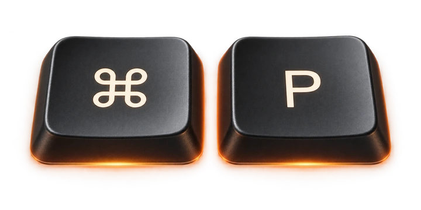

Built for you. And for your agents.
Koloft is a free Mac app for Claude Code, Codex, Muse Code and Antigravity CLI. You start a session with one plain sentence and follow it in one window, or hear from it on your phone when it needs you. Your agents start sessions of their own, drive a browser of their own, and report back.
curl -fsSL https://raw.githubusercontent.com/superkoh/koloft/main/install.sh | bash
Signed and notarized by Apple · no sign-up · no tracking · other ways to install
recorded in Koloft with a real Claude Code 2.1.296 — every screen is the app's own
Not a replacement. Koloft runs the claude, codex,
muse and agy you already have, reads their own records (nothing to
import), and never covers their screen. A red dot tells you which session is waiting;
⌘J jumps to it.
Say what you want. Skip the where and how.
Press ⌘P and type the job. With Assist on, Koloft picks the folder, opens a worktree in a git repo and names the session; the agent you picked starts on your words. The same box jumps to any session and searches everything you said.

notePicking the place needs Koloft Assist on (Settings ▸ Assist); with it off, ⏎ opens the folder picker with your words kept. ⏎ starts your default agent. The ▾ beside the button lists them all; ⇧⏎ picks another agent.
Everything ⌘P doesYour agent splits the work. You see every piece.
An agent runs koloft session new and a real session opens under the one
that started it, in a worktree of its own when it asks for one. Click into any of them
and keep talking. When a child finishes its first turn, its result goes back to the
parent.
koloft session send (Claude sessions also talk with SendMessage); your
butler gets each session's reply back by itself when the turn ends.
noteWorks for every agent. In a remote folder the child opens on that machine, beside its parent.
What agents can do with KoloftThe agent keeps its terminal. It gets a browser too.
The middle is the agent's own terminal; Koloft draws nothing over it. Beside it hangs that session's Workbench: a real browser the agent can open and click, a terminal tab in the session's folder, and every change as a live diff.
playwright-cli that ships inside, clicks and reads them; sites you signed
into in the Workbench stay signed in for it.
noteIn remote folders the terminal tab and changes work; the agent can't drive the browser there yet.
Everything in the WorkbenchSay it in plain words. Your butler runs Koloft for you.
Your butler, Alfred until you rename it, is Koloft's own AI, first in the sessions list. Tell it what you want, here or on your phone: it starts, resumes and stops sessions, closes finished ones, reads what they said, answers their questions and presses their keys. A side job goes to a helper of its own, which reports back.
noteSet it up in Settings ▸ Assist. It runs on your Mac; it can message a session in a remote folder, not start one there.
Everything your butler doesAway from the Mac? Your sessions come with you.
Bind your butler to your own Discord bot and talk to it from anywhere, in one channel. It reaches your sessions for you and tells you what they did. Your bot, your server: no server of ours in between.
- Say it in the channel“add a health check to tidewatch” goes to your butler on your Mac, which starts the session in that folder.
- It keeps trackAsk how a session is doing, or tell it how to answer one that is waiting: it reads the session, answers it, and tells you in the channel.
- Files and picturesA file you attach reaches your butler; ask it and it sends files back, or a picture of a web page.
noteYour butler sets the bot up for you; you sign in, click the two buttons Discord lets only you click, and pass its human checks.
A butler on DiscordWork keeps going while you're away.
Put a job on a schedule and Koloft starts a fresh session for it every hour, day or week; in a git repo, in a worktree of its own. Read what it did in the morning, here or by asking your butler from your phone.
On a schedule
Hourly, daily or on the days you pick, as a sentence or a /skill. Tell it to close when done and it tidies up, unless work is left uncommitted or unmerged.
Keep running
Pin a session and it never sleeps, and it starts in the background every time Koloft opens.
On another machine alpha
In a folder you reach over SSH, the agent runs on that machine, so it keeps going when the line drops or your Mac sleeps.
noteA schedule fires only while Koloft is open and your Mac is awake; leave View ▸ Keep Mac Awake on (it is on by default). In a remote folder the run itself keeps going even if the Mac sleeps later.
Several accounts, one pool
A new session starts on the Claude, Codex or Muse account with the most room; no more “limit reached”.
Pull requests and checks
Commit and push from the Workbench; one click opens GitHub's new-PR page for the branch, and a failing check's log goes back to the session in one click.
Everything comes with it
git, gh and playwright-cli ship inside; one click installs Claude Code, Codex, Muse Code or Antigravity CLI.
What it will never do
-
ask you to sign upNo Koloft account. It runs on your own Claude, Codex, Muse or Antigravity login.
-
track youNo analytics. The few places it talks to are all listed.
-
copy your chatsIt reads the tools' own records; a remote folder's are read from that machine, and nothing goes anywhere else.
-
cover the agentNothing is drawn over the agent's terminal.
Give your agents a home.
Free and open source (GPL-3.0). One line to install, nothing to sign up for.
curl -fsSL https://raw.githubusercontent.com/superkoh/koloft/main/install.sh | bash